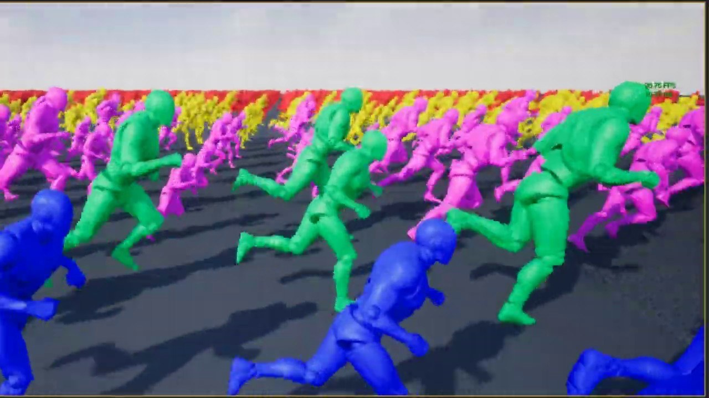

歷史參考｜UE4 頂點動畫工具：把骨架與 Morph 動作烘成貼圖
這篇 2019 年文章介紹 Vertex Anim Toolset：在 UE4 內把骨架與 Morph Target 動畫烘進貼圖，再由材質驅動靜態網格，並為不同 LOD 建立讀取動畫資料的 UV。

動畫 ★★★☆☆
完整分析
骨架動畫轉貼圖的製作流程
插件把骨骼與形狀目標的動畫資料烘進貼圖，並從骨架網格建立靜態網格，附加特殊 UV，讓各個 LOD 能讀同一套動畫資料；材質著色器再使用貼圖重現變形，也可把多段動畫放入同一張貼圖。
減少工具往返的工作流價值
文章強調烘焙能在 UE4 內完成，不必先把買來的動畫資產送到 Houdini 或 Blender 再處理。推論上，這可縮短靜態網格頂點動畫的準備路徑，但不等於動畫從此不占記憶體，或保留骨架控制器所有互動能力。
效能宣稱與現代引擎相容限制
來源把材質驅動靜態網格描述為較有效率的播放方式，但沒有列出角色數、貼圖尺寸與測速結果。它是 2019 年 UE4 插件介紹，不能由此保證當前 UE5 相容，或宣稱任意動畫都能取得固定的效能倍數。
BRIEF｜來源已驗證；證據深度較有限，完整分析會明確區分已知資訊與待驗證事項。